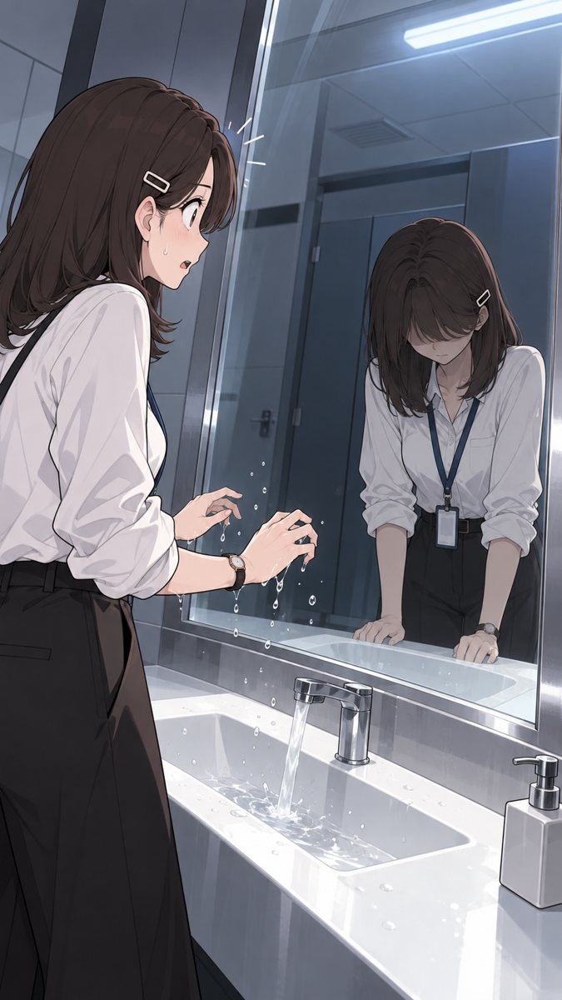

이야기
시즌 1 · 부러움 → 발견 → 선택
2014년 11월 7일, 오후 7시 52분. 졸업전시 마지막 날, 준호가 말했다. "베를린, 같이 가자." 하은은 가지 않았다. 대답도 하지 않았다.
10년 뒤. 야근하던 밤, 회사 화장실 거울 속에서 그날 준호를 따라간 하은을 만난다. 같은 얼굴, 같은 흰 셔츠. 다른 것은 뒤에 보이는 어둑한 작업실뿐. 그 여자는 꿈을 다 이뤘다. 그런데 매일 밤 7시 52분, 이쪽을 보고 있었다.
거울 너머의 나에게는 있고 나에게는 없는 것. 나에게는 있고 그 여자에게는 없는 것. 두 하은이 서로의 자리를 부러워하다가, 결국 각자의 자리로 돌아오는 이야기.
